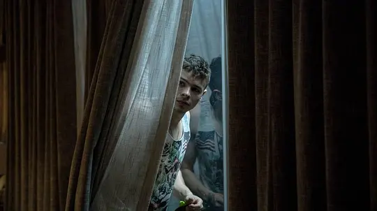

-
导演:
香农·墨菲
-
编剧:
丽塔·卡内贾斯
-
类型:
剧情 / 喜剧
-
语言:
英语
-
片长:
120分钟
视频介绍
我们知道，乳牙是人萌生的第一组牙，共20个，在人的青春期自6～7岁至12～13岁，乳牙逐渐脱落而被恒牙所替代。于是乳牙就是象征这一种青春的成长的意象。而这样意象尤为在中国农村家庭的风俗里更具有仪式感，如长辈们会对孩子们说，掉了的上颌的乳牙得往床底扔，掉了的下颌的乳牙就得往屋顶扔，且扔的时候得做出双脚合拼，做出虔诚的样子才扔出去，这样才会让恒牙长得比较整齐和坚固。这自然是农村习俗的繁琐，但也见得人们关于小孩青春健康成长的重视和美好祝愿。
说起关于青春成长的重视，国内有很多这方面题材的电影，如去年的《过春天》等，就是现实主义的佳作。而放眼国际电影市场，如在澳大利亚的的国度，关于青春成长电影，他们又是怎么拍的呢？
视频截图

其中，青春成长电影《乳牙》是由澳大利导演珊农墨菲执导，伊莱扎斯坎伦、本门德尔森、托比华莱士、埃茜戴维斯、艾米丽巴克雷联袂主演的喜剧电影。该片也是利用乳牙这个青春成长的意象作为电影名字，赋予了一种明是喜剧暗示成长悲剧的电影，这部电影是导演关于小女主角的悲惨命运的处境做了一次艺术诗意和充满童真的处理，显得电影十分有看点。